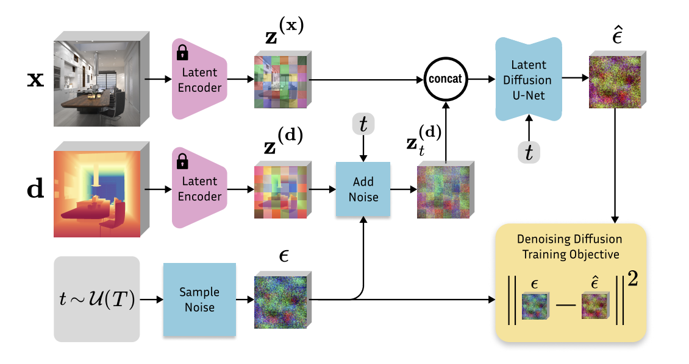
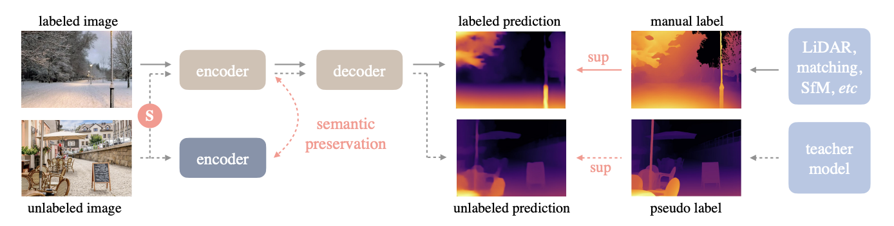

Exploring the robustness of monocular depth models on imperfect images.
Existing Benchmarks
We evaluate model robustness using several standard RGB-D datasets:
DIODE: Includes a diverse set indoor/outdoor scenes.
ETH3D: Focuses on a structured set of outdoor scenes.
iBims-1: Contains a variety of indoor scenes.
KITTI: Covers inputs from urban driving scenarios.
Custom Dataset
In addition to testing on existing benchmarks, we introduce a custom dataset to evaluate model performance on images with systematic variations in acquisition properties that tend to be underrepresented in datasets. In particular, we focus on images with compositions that are underrepresented in existing datasets, looking at different vantage points and lighting conditions, as well as images taken with different camera paramters that determine the exposure of the image. Below is a scene from the McGregor breezeway, where we fix shutter speed, ISO, and aperture. We construct a grid by varying the other two parameters.
Fixed shutter speed. Vertical axis corresponds to ISO and horizontal axis corresponds to aperture.Fixed ISO. Vertical axis corresponds to aperture and horizontal axis corresponds to shuter speed.Fixed aperture. Vertical axis corresponds to shutter speed and horizontal axis corresponds to ISO.
Shutter speed determines how long the camera sensor is exposed to light, ISO determines the sensitivity of the camera sensor to light, and aperture determines how much light enters the camera. By varying these parameters, we can create a diverse set of images that also mimic practical challenges that can be faced by these models.
Degradations
To study robustness beyond the original data distribution, we generate degraded versions of each dataset using synthetic corruptions. This allows us to systematically evaluate model sensitivity under controlled perturbations. We apply various common image degradations, including:
Brightness Manipulation
Gaussian Blur
Injected Noise
Color Space Shifts
These transformations simulate realistic scenarios where lighting changes, motion blur, compression artifacts, may occur, or where accessible filters may be applied.
Models
Our evaluation includes multiple state-of-the-art monocular depth estimation models, using encoder decoder architectures. Each model is tested on degraded images to assess their ability to generalize to the range of inputs that they may encounter under real-world settings.
Marigold
Marigold utilizes a diffusion-based approach to produce a metric depth map of an RGB image. Marigold was released in 2024, though improvements to the model are actively being worked on.

Depth Anything
Depth Anything leverages semantic segmentation to produce an inverse metric depth map of an RGB image. Both Depth Anything V1 and V2 were released in 2024.

UniDepth
UniDepth incorporates camera intrinsics to produce a metric depth map of an RGB image. UniDepth V1 was released in 2024, and UniDepth V2 was released in 2025.